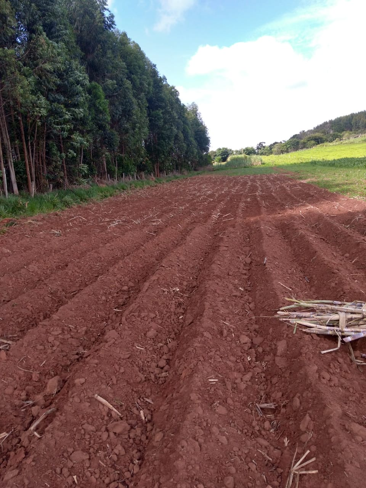
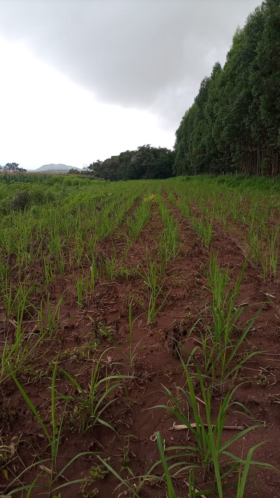
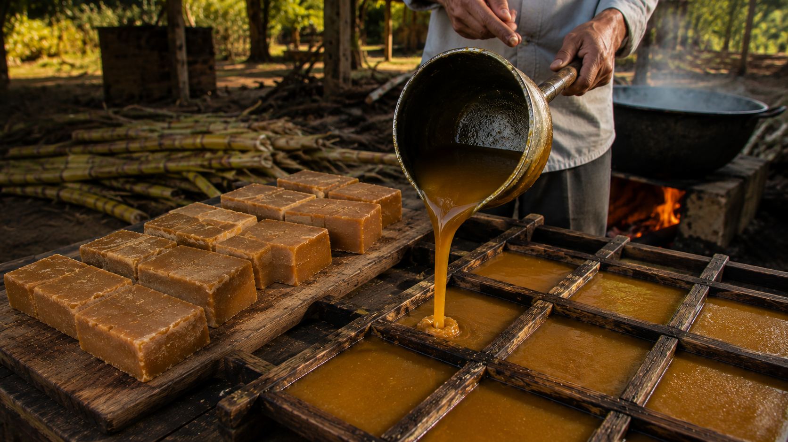
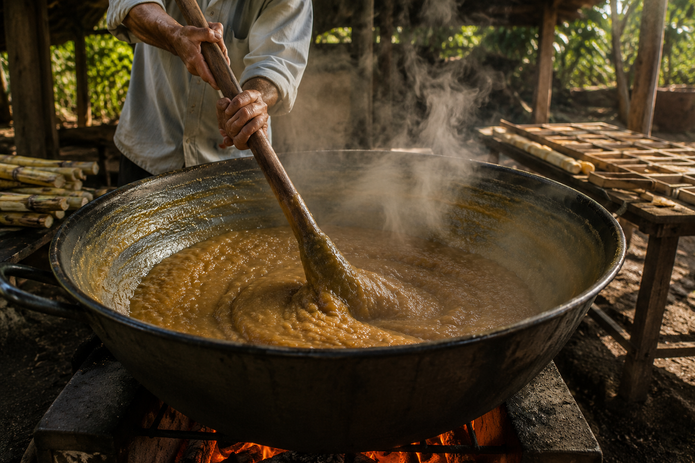
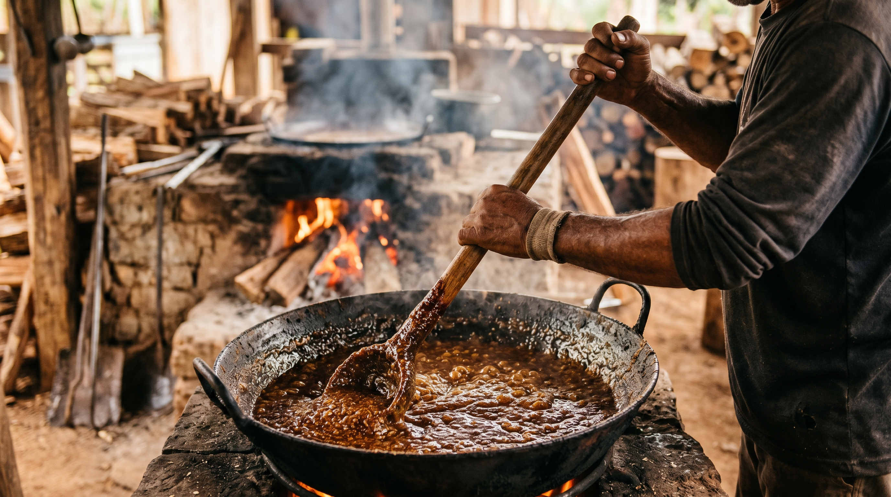

Da Cana ao Sabor
Diretamente do interior de Minas Gerais



Feita de forma tradicional, preservando o sabor raiz da verdadeira rapadura mineira produzida artesanalmente no interior.
De Tradição Familiar
Artesanal
Produção mineira
Tradição, qualidade e sabor artesanal

Cada rapadura é preparada artesanalmente, preservando o sabor tradicional e a qualidade da verdadeira produção mineira.

Produção feita da forma tradicional, utilizando técnicas passadas de geração em geração no interior de Minas Gerais.

Um sabor marcante e autêntico que carrega a essência da roça e da tradição artesanal brasileira.
Qualidade artesanal em cada detalhe
Sem conservantes e feita apenas com ingredientes selecionados.
Produzida artesanalmente no tacho, preservando o sabor original da roça.
Cada produção recebe atenção especial para garantir qualidade e autenticidade.
Diretamente do interior de Minas Gerais


Tradição passada de geração em geração
A produção de rapadura não é apenas um negócio para nós; é uma herança preciosa que corre em nosso sangue. Essa história atravessa quatro gerações: começou com o meu bisavô, passou pelo meu avô e chegou ao meu pai — que, com muito orgulho, mantém até hoje o seu engenho movido a tração animal, preservando a essência mais pura de antigamente.
Em 2012, decidi ouvir o coração e dar continuidade a esse legado de uma forma nova. Deixei um emprego fixo para apostar no sonho de produzir uma rapadura autêntica, pura e livre de químicas. O que começou com um engenho pequeno e muita coragem, hoje se transformou em uma estrutura moderna com engenho elétrico.
Embora a tecnologia tenha mudado para ganharmos qualidade e escala, o compromisso permanece o mesmo de 14 anos atrás: oferecer um produto natural, feito com o carinho da agricultura familiar, honrando o passado que aprendi no engenho do meu pai e construindo um futuro doce para as próximas gerações.
Entre em contato diretamente com a Rapadura do Rivaldo e conheça mais sobre nossa produção artesanal.